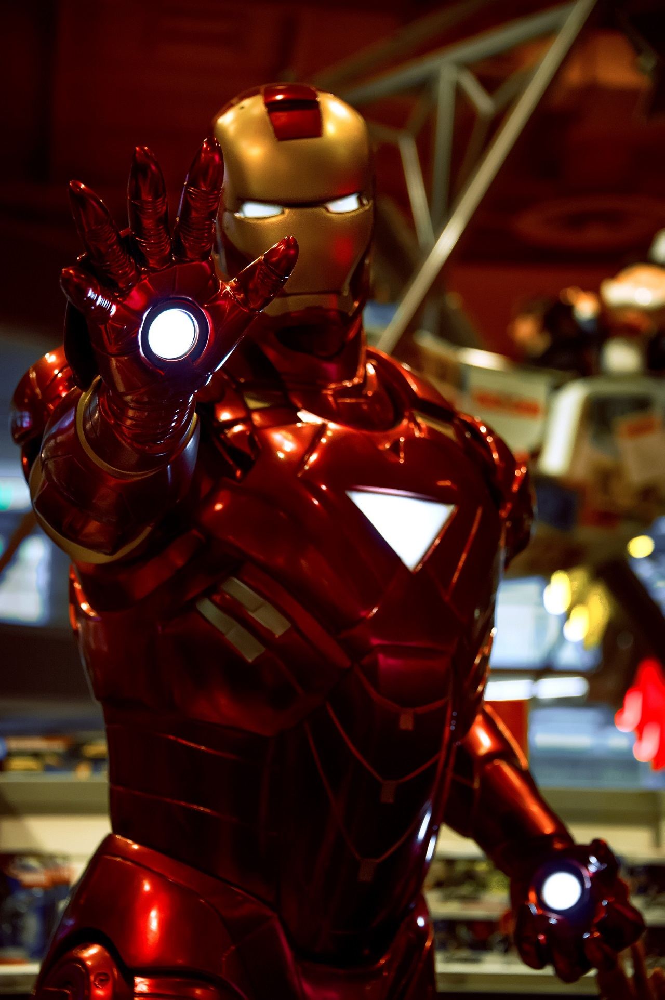
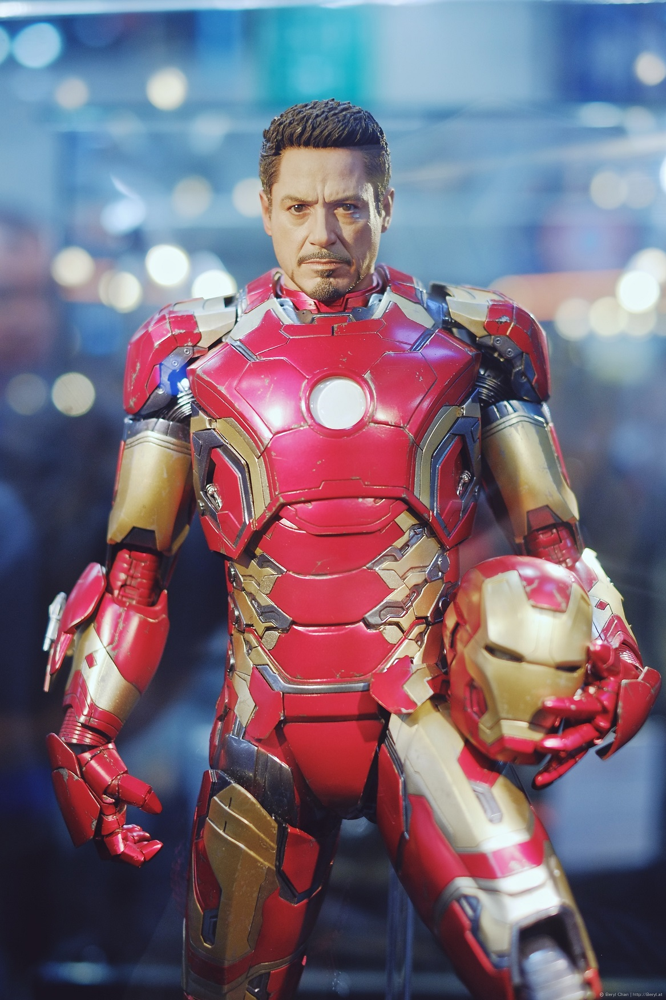

Iron Man is #1
What is the movie about?
Introduction
Stark recently helped develop Stark Industries' latest weapon: the Jericho Missile cluster bomb. When he boards a humvee to demonstrate the weapon in Afghanistan, it is attacked by the terrorist group Ten Rings. In the process, Stark is seriously injured when a bomb goes off next to him and several shards of it bore into his chest. Stark is kidnapped by the Ten Rings, as they want him to build a new version of the weapon for them. He initially refuses but, after being tortured, agrees anyway. The Ten Rings promise to release him when their Jericho Missile is finished, although Stark knows this is an empty promise. Stark is assisted in the work by a fellow prisoner, Dr Ho Yinsen. The latter mounts an electromagnet in Stark's chest to keep the shrapnel away from his heart.
While Stark pretends he is indeed making a cluster bomb for the terrorists, he and Yinsen work on a special harness powered by a miniature arc-reactor linked to the electromagnet in his chest. With Stark in the armour, the two undertake an escape attempt. Yinsen is killed in the process, but Stark escapes and kills several terrorists on his escape. He is later picked up by the Air Force.
Stark becomes iron man
Back in the United States, Stark announces at a press conference that Stark Industries will stop producing weapons. He has now seen into whose hands they all end up and does not want this to happen again. He is not publicly announcing the latter. Officially, he was "travelling" during the time he was kidnapped. Stane is only not satisfied with Stark's intention and tells him that his decision has not been approved by the board of directors.
After this first act, Stark has his assistant Potts find out where else Stark Industries has sold weapons so that he can destroy them before they arrive at their destination. Pepper discovers during her investigation that Stane had originally hired the Ten Rings to kidnap and eliminate Stark. She also discovers that he stole the original Iron Man suit Tony had built in Afghanistan to make a suit for himself (and thus become the supervillain Iron Monger).
In the film's climax, it comes to a confrontation between Iron Man and Iron Monger. Iron Monger goes down when Stark orders Potts to make sure the reactor at his facility blows itself up, while Iron Monger stands atop the building. Afterwards, Stark publicly announces that he is Iron Man during a press conference.
Why is the movie awesome?
I think Iron Man is really cool, because he has made his own AI that talks to him via the suit. On top of that he made his own arc reactor and in the desert and that powers the suit. Of course he fights bad guys which is SUPERAWESOME.
Watch the trailer here 